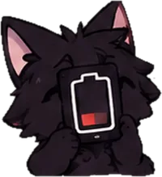

Your lazy, sarcastic,
but loyal roommate.
Jixxy is a black, fluffy, heavy-lidded cat who lives on your Android screen. Pick the apps, and he’ll make you pause, with a joke, before you dive in. He’s a naggy cat, but you’re always in charge.
Free. Android 8+. Installed as an APK from GitHub Releases, not from the Play Store.
He pauses you, with jokes
The idea: you choose the apps and how roasty he is. When you open one, a short card appears. This is what it’s meant to look like; the pause card isn’t working in the alpha yet.
“Leave now, or I start rating the thumbnails.”
Jixxy
Lines are written by hand. In the app they’ll name the app you opened and how long you’ve been in it. Apps are neutral examples; Jixxy isn’t affiliated with any app or brand.
- You’re always in control. Leave works instantly. Stay unlocks after a few seconds.
- He jokes about the situation, not about you. Late at night he gets softer.
- No guilt mechanics. No lost streaks, no punishment for being away, one tap to nap him.
His many moods
Straight from the character sheet. Not every mood is wired into the app yet.
- ...really?
- Ooh nice!
- Nap time...
- Respect.
- Hehe.
- ...you good? ♡

5%?! bro charge.- Finally, food.
How he talks
“The world’s gone quiet. Take your time.”
“Left without a fight. That was genuinely good.”
Jixxy’s review of your week
Once a week he writes up how it went, in his voice, as a card you can share if you want to. A weekly screen and share card exist in the newest builds, but nobody has seen them work on a phone yet.
Privacy you can check
Jixxy is built without the internet permission. No accounts, no ads, no analytics. He doesn’t read your messages, and has no accessibility service, microphone, camera, location or contacts permission. This page loads nothing from other websites. Details in the privacy notice (draft).
What works today
Seen working on a real phone (v0.0.1-alpha):
- It installs and opens on Android.
- A floating placeholder sprite can be switched on. That build was silent, had a temporary three-button screen and no working Pause card.
In newer builds, written and tested by the computer but not yet seen on a phone:
- The real app screens, the cat art and the Jixxy icon.
- Speech bubbles, the Pause card (Leave / Stay), the nap fix and the weekly card.
See the changelog for known issues.
FAQ
Why does he need to display over other apps?
That’s how a floating character and the pause card can appear on top of other apps.
Why Usage access?
So he knows which app is in front. He sees the app’s name and time only, never what’s inside it.
Does he read my messages?
No.
Why no internet?
On purpose. Without the permission, the app can’t send your data anywhere.
Does it cure phone addiction?
No, and we don’t claim it does. He’s a small nudge with a sense of humour.
How do I install it?
Download the APK from the Releases page and follow the steps in the README, including the Android 13+ “Allow restricted settings” step.
Is it free?
Yes. No ads, no accounts, no payments.